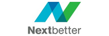
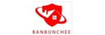

01
Smarter Work
งานลื่นไหลขึ้น ลดงานซ้ำและขั้นตอนที่ไม่จำเป็นSmoother work with less repetition and fewer unnecessary steps.
RELEARN OS เชื่อมการเรียนรู้กับงานจริง เพื่อสร้างคนที่พร้อมคิด ปรับตัว ใช้เทคโนโลยีอย่างมีวิจารณญาณ และสร้างผลลัพธ์ที่องค์กรเห็นได้RELEARN OS connects learning to real work so people can think, adapt, use technology with judgement, and create visible organisational outcomes.
เริ่มจากผลลัพธ์ที่องค์กรต้องการ แล้วค่อยเชื่อมไปสู่แนวทางพัฒนา โปรแกรม และเคสที่เกี่ยวข้องStart with the outcome you want, then connect it to the right development path, programme and relevant case.
งานลื่นไหลขึ้น ลดงานซ้ำและขั้นตอนที่ไม่จำเป็นSmoother work with less repetition and fewer unnecessary steps.
ตัดสินใจได้ชัดขึ้นจากข้อมูล บริบท และวิจารณญาณที่ดีขึ้นClearer decisions backed by better data, context and judgement.
ยกระดับคุณภาพบริการและความเชื่อมั่นของลูกค้าElevate service quality and customer confidence.
คนเรียนรู้ ปรับตัว และทำงานร่วมกับเทคโนโลยีได้อย่างมีความหมายPeople who learn, adapt and work meaningfully with technology.
แกนการเรียนรู้ร่วมกันที่ปรับตามงานจริง ระดับผู้เรียน และบริบทของแต่ละธุรกิจบริการA shared learning core adapted to real work, learner level and each service-business context.
เหมาะกับทีมที่ต้องการประยุกต์ AI กับ workflow งานบริการจริงFor teams applying AI to real service workflows.
เหมาะกับหัวหน้าทีม ผู้บริหาร และผู้เตรียมขึ้นบทบาทผู้นำFor team leaders, executives and emerging leaders.
เหมาะกับทีมขาย การตลาด และผู้ดูแลแบรนด์For sales, marketing and brand-growth teams.
เหมาะกับทีมบริการ หน้างาน และผู้ดูแล customer journeyFor service, frontline and customer-journey teams.
กรอบการพัฒนาที่เริ่มจากการเข้าใจจุดตั้งต้น พัฒนาความสามารถ ปรับวิธีทำงาน และนำไปใช้จริง โดยวัดผลตลอดทั้งกระบวนการA development framework that starts with the right diagnosis, builds capability, redesigns ways of working, and turns learning into action—with measurement throughout.
ประเมินความพร้อม จุดแข็ง ช่องว่าง และบริบทของคน งาน บริการ และเทคโนโลยีAssess readiness, strengths, gaps and the context of people, work, service and technology.
พัฒนาความรู้ ทักษะ วิธีคิด และความมั่นใจ โดยเชื่อมการเรียนรู้กับบทบาทและงานจริงBuild knowledge, skills, mindset and confidence around real roles and real work.
ทบทวนสิ่งที่เคยรู้ แล้วออกแบบบทบาท Workflow และประสบการณ์การทำงานให้ดีขึ้นRevisit existing assumptions and redesign roles, workflows and the work experience.
ทดลอง ประยุกต์ใช้ และทำให้แนวทางใหม่กลายเป็นวิธีที่ทีมและองค์กรทำงานจริงTest, apply and embed new ways of working across individuals, teams and the organisation.
วัด Adoption, พฤติกรรมการทำงาน, Productivity, คุณภาพบริการ และผลลัพธ์ทางธุรกิจ แล้วนำบทเรียนกลับเข้าสู่ Diagnose เพื่อพัฒนารอบถัดไปMeasure adoption, work behaviour, productivity, service quality and business outcomes—then feed the learning back into Diagnose for the next cycle.
Designed Around Outcomes. Not Training Days.Designed Around Outcomes. Not Training Days.
ประสบการณ์จากโจทย์จริงที่เชื่อมคน งาน บริการ เทคโนโลยี และการเปลี่ยนแปลงในองค์กรExperience from real challenges connecting people, work, service, technology and organisational change.
ออกแบบบริการและประสบการณ์ผู้ใช้ในบริบทสุขภาพดิจิทัลDigital-health service and user-experience design.

พัฒนาวิธีทำงานและมาตรฐานบริการสำหรับหลายสาขาWays of working and service standards across multiple branches.
เชื่อมคุณภาพ กระบวนการ และการตัดสินใจให้เป็นระบบเดียวกันConnecting quality, process and decision-making.
บริบทที่ต้องอาศัยความรู้เฉพาะทาง ความน่าเชื่อถือ และความแม่นยำสูงA context requiring specialised knowledge, credibility and precision.
ปรับ workflow ให้ข้อมูล เอกสาร และงานติดตามชัดขึ้นImproving workflow clarity across information, documents and follow-through.


RELEARN OS เชื่อมศักยภาพของคน งานบริการ และการเปลี่ยนแปลงที่มีความหมาย เพื่อเตรียมคนให้เป็น Future-ready People ที่มีคุณภาพRELEARN OS connects people capability, service work and meaningful change to develop quality future-ready people.
เราเริ่มจากคนและบริบทของงาน แล้วออกแบบการเรียนรู้ให้กลายเป็นความสามารถที่ใช้ได้จริงและเห็นความก้าวหน้าได้We start with people and work context, turning learning into practical capability and visible progress.
AI ใช้เพื่อเสริมวิจารณญาณ คุณภาพงาน และคุณค่าที่มนุษย์สร้างได้ ไม่ใช่แทนความรับผิดชอบของคนAI should strengthen judgement, work quality and human value, not replace human responsibility.

นำประสบการณ์ด้านงานบริการ การพัฒนาศักยภาพ และการเปลี่ยนแปลงที่นำไปใช้ได้จริง มาร้อยเรียงเป็นเส้นทางการเรียนรู้ที่ผู้เรียนสามารถนำกลับไปใช้กับงานได้Brings together service experience, capability development and practical transformation to create learning journeys people can carry into their work.
เลือกช่องทางที่สะดวกเพื่อคุยเรื่องโจทย์องค์กร ผู้เรียน และผลลัพธ์ที่ต้องการChoose the most convenient way to discuss your organisation, learners and intended outcomes.
ดู Master Programme และเลือกจุดที่ตรงกับโจทย์องค์กรReview the Master Programme and find the right starting point.
ดูโปรแกรม ↑View programme ↑กลับขึ้นด้านบนหรือส่งลิงก์นี้ให้ทีมที่เกี่ยวข้องดูได้ทันทีReturn to the top or share this page with your team.
กลับขึ้นด้านบน ↑Back to top ↑